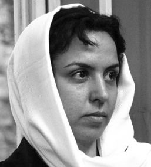
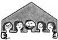
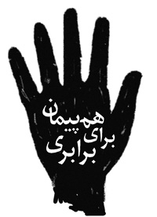
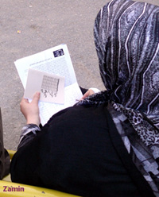

مقالههاى اين بخش
- 5 مرداد 1388

- 1 مرداد 1388
- 30 تیر 1388
- 27 تیر 1388

- 25 تیر 1388

- 23 تیر 1388
- 19 تیر 1388
- 22 خرداد 1388
- 20 اسفند 1387
اتفاقات اخیرو نقش جنبش زنان
فاطمه فرهنگ خواه
- 20 بهمن 1387
به همراه یادادشت کریستوا برای کمپین یک میلیون امضا
ترجمه و تالیف: فیروزه مهاجر
- 11 بهمن 1387

شهلا شفیق :
- 4 بهمن 1387
دوبووار زنی که ندای تغییر بود
کلودین مونتی- ترجمه ی هما مداح
- 27 دی 1387
نقدی بر مقاله " استبداد ساختار نداشتن" جو فریمن
یاشار گرمستانی
- 26 آذر 1387

چند همسری در لایحه حمایت از خانواده از 1387-1346
زهره ارزنی
- 5 آذر 1387
برای محو خشونت های قانونی
سوسن طهماسبی
- 22 آبان 1387
لایحه حمایت خانواده
پروین اردلان
- 11 آبان 1387
نقدهایی بر روند اعتراض به لایحه حمایت خانواده
زهره اسدپور
- 1 آبان 1387

جمع آوري امضا: هويت يگانه کمپين
نفيسه آزاد
- 25 شهریور 1387
نگاهی به روند حقوقی پرونده های فعالان زن:
هوشنگ پور بابائی *
- 26 مرداد 1387
نگاهی دیگر به مساله چند همسری:
نوشین کشاورزنیا
- 12 مرداد 1387

نگاهی به تاریخچه چند همسری در قوانین ایران
زیبا امیری
- 9 مرداد 1387
بررسی تفصیلی لایحه حمایت از خانواده
دکتر رُزا قراچورلو *
- 16 تیر 1387
زنان زنداني
محبوبه حسین زاده
- 10 تیر 1387

سلسله سخنراني هاي كانون مدافعان حقوق بشر:
دكتر امير نيك پي
- 5 تیر 1387
نگاهی به استدلال های حقوقی:
فیروزه مهاجر
- 18 خرداد 1387
همبستگی در اعتراض
نیلوفر گلکار
- 30 اردیبهشت 1387
قدرت
نوشین کشاورزنیا
- 16 اردیبهشت 1387

هفته ای با کارگران
تغییر برای برابری
- 12 اردیبهشت 1387

آذر بني عامري
- 7 اردیبهشت 1387
الهه امانی
| ... | | | | | | | 210 | | |